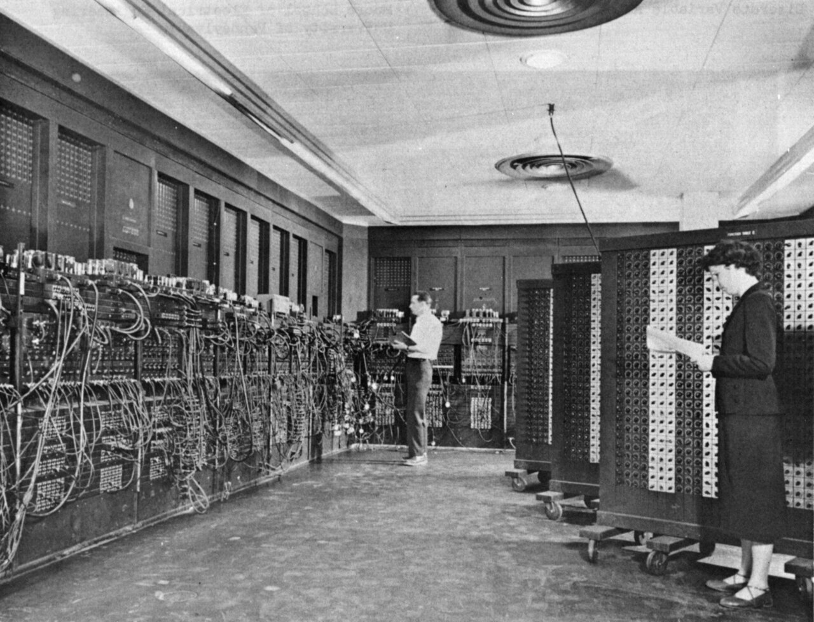
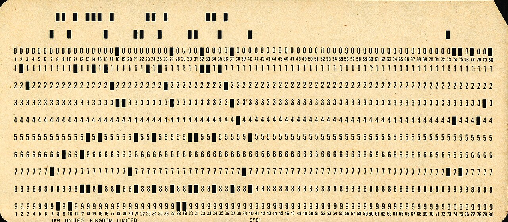
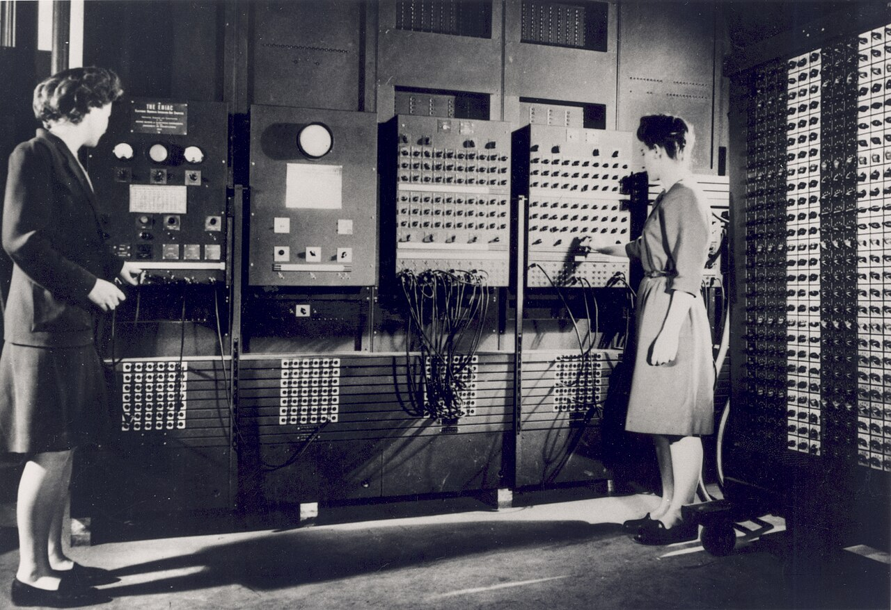

امروز اگر یک کامپیوتر کند بشه، احتمالاً اولین واکنشمون اینه که برنامه رو ببندیم، سیستم رو ریاستارت کنیم یا به فکر ارتقای سختافزار بیفتیم.
اما زمانی بود که کامپیوترها دستگاههایی بزرگ، گران و پیچیده بودن که کار با اونها به تجهیزات ویژه و افراد آموزشدیده نیاز داشت.
برای درک این تحول، باید با فناوریای آشنا بشیم که در بسیاری از کامپیوترهای الکترونیکی اولیه نقش مهمی داشت: لامپ خلأ.
لامپ خلأ چه کاری انجام میداد؟
لامپهای خلأ در مدارهای الکترونیکی برای کارهایی مثل تقویت یا کنترل جریان استفاده میشدن.
در طراحیهای دیجیتال، میشد از این قطعات برای ساخت مدارهایی استفاده کرد که وضعیتهای منطقی رو پردازش کنن.
اما این قطعات نسبتاً بزرگ بودن، گرما تولید میکردن و به تجهیزات و نگهداری مناسب نیاز داشتن.
وقتی تعداد قطعات به هزاران عدد میرسید، مدیریت دستگاه پیچیدهتر میشد.
ENIAC؛ یکی از نامهای مهم تاریخ کامپیوتر
ENIAC۱ یکی از کامپیوترهای الکترونیکی دیجیتال اولیه و مشهور بود که در دهه ۱۹۴۰ ساخته شد.
این دستگاه برای انجام محاسبات عددی طراحی شده بود و در پروژههای محاسباتی، از جمله محاسبات مرتبط با مسائل نظامی، کاربرد داشت.
ENIAC از هزاران لامپ خلأ۲ استفاده میکرد و فضای بسیار زیادی اشغال میکرد.

اما نکته مهم فقط اندازه دستگاه نبود.
در بسیاری از سامانههای اولیه، تغییر وظیفه دستگاه میتونست به تغییرات فیزیکی، تنظیمات پیچیده یا آمادهسازی زمانبر نیاز داشته باشه.
در مقایسه با کامپیوترهای امروزی، برنامهریزی و نگهداری این ماشینها تجربه متفاوتی بود.
با این حال، نباید تصور کنیم همه کامپیوترهای اولیه دقیقاً مثل هم کار میکردن. معماریها و روشهای برنامهریزی در طول زمان تغییر کردن.
برنامهنویسی پیش از محیطهای امروزی
امروز ممکنه برنامهای رو در یک ویرایشگر بنویسی، روی دکمه اجرا کلیک کنی و چند ثانیه بعد نتیجه رو ببینی.
در نسلهای اولیه کامپیوتر، برنامهریزی میتونست به تنظیم کلیدها، اتصال کابلها، استفاده از کارت پانچ۳ یا روشهای دیگری وابسته باشه.

این روشها به نوع دستگاه و دوره تاریخی بستگی داشتن.
برای درک تفاوت، تصور کن بخوای یک برنامه رو تغییر بدی، اما بهجای اصلاح چند خط کد، مجبور باشی مراحل تنظیم فیزیکی دستگاه رو تغییر بدی.
اشتباه کوچک در چنین فرایندی میتونست هزینه زیادی داشته باشه.
نقش انسانها در محاسبات اولیه
تاریخ کامپیوتر فقط تاریخ دستگاهها نیست.
افرادی که محاسبات رو انجام میدادن، برنامهها رو آماده میکردن، خطاها رو پیدا میکردن و روشهای کار با ماشینها رو توسعه میدادن، بخش مهمی از این تاریخ هستن.
زنان نیز در محاسبات و برنامهنویسی اولیه نقش مهمی داشتن.
برای مثال، گروهی از زنان بهعنوان برنامهنویسان ENIAC فعالیت میکردن و در آمادهسازی برنامههای دستگاه نقش داشتند.

این بخش از تاریخ یادآوری میکنه که پیشرفت فناوری فقط به اختراع سختافزار وابسته نیست؛ مهارت، دانش و کار انسانها هم اهمیت اساسی دارن.
پاورقیها و توضیحات
- ENIAC: Electronic Numerical Integrator and Computer؛ کامپیوتر الکترونیکی که در دانشگاه پنسیلوانیا ساخته شد و در ۱۹۴۶ بهطور عمومی معرفی شد. برای محاسبههای نظامی (مثل جدولهای پرتاب) به کار رفت و برنامهریزیش با کابلها و کلیدها انجام میشد. ↑
- لامپ خلأ: قطعهای شیشهای که هوای داخلش گرفته شده و جریان الکتریکی بین الکترودهاش کنترل میشه؛ میتونست مثل کلید یا تقویتکننده عمل کنه. گرم میشد، برق زیادی میخواست و گاهی میسوخت؛ برای همین کامپیوترهای پر از لامپ بزرگ و پرمصرف بودن. ↑
- کارت پانچ: کارت مقوایی که الگوی سوراخهاش داده یا دستور رو کدگذاری میکنه. ایده از ماشینهای بافندگی ژاکار (حدود ۱۸۰۰) اومده و بعدها در سرشماری، دفتریکاری و کامپیوترهای اولیه استفاده شد. ↑
این توضیحها را تحریریه نوشته؛ پیش از انتشار نهایی باید با منبع تطبیق داده شوند.
نسخهٔ صوتی این بخش
اگر حوصلهٔ خوندن نداری، همین بخش رو بهصورت صوتی گوش بده.
گویندهٔ خودکار مرورگر (جایگزین)
منابع پیشنهادی برای راستیآزمایی
متن این بخش ارجاع درونمتنی ندارد؛ فهرست زیر نقطهٔ شروع بررسی تحریریه است، نه تأیید ادعاهای تکتک جملهها. فهرست عمومی منابع شماره